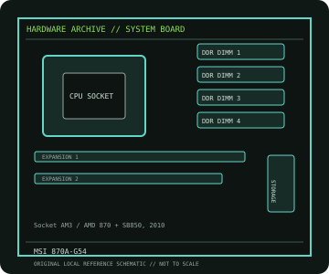

[ INDIVIDUAL COMPONENT // MOTHERBOARDS ]
MSI 870A-G54
870A-G54: Socket AM3 / AMD 870 + SB850, 2010; revision-aware Socket motherboard specifications, CPU/BIOS qualification, board size, memory, expansion, storage and I/O.

IDENTIFICATION: Standard 870A-G54; do not confuse with 870A-G54 (FX). Confirm the exact silkscreen, revision and firmware on the physical board; near-name variants can use different BIOS files and connectors.
Specifications
| Catalog subcategory | AMD Socket platforms |
|---|---|
| Exact board / model | 870A-G54 — Standard 870A-G54; do not confuse with 870A-G54 (FX) |
| Platform and chipset | Socket AM3 / AMD 870 + SB850, 2010; AMD 870 northbridge with SB850 southbridge. |
| CPU and BIOS support | Socket AM3; MSI lists AMD Phenom II, Athlon II and Sempron families. Do not assume AM3+ FX support; check the exact CPU list and BIOS. |
| Memory | Four DDR3 DIMM sockets, dual-channel, up to 16 GB; supported speeds include JEDEC and overclocked profiles as qualified by MSI. |
| Board size / form factor | ATX, 305 × 215 mm. |
| Expansion and storage | Two PCIe x16-length slots (x16/x4 electrical), one PCIe x1 and three PCI slots; six SATA 6 Gb/s ports and one IDE channel. |
| Rear I/O and compatibility | USB 3.0 and USB 2.0, Gigabit Ethernet, 8-channel audio, PS/2 and legacy audio/line connectors; discrete graphics required. This record is the non-FX 870A-G54, not the distinct 870A-G54 (FX). Use an AM3 CPU explicitly listed by MSI, the required BIOS and DDR3 memory; consult the manual for CrossFire and slot limits. |
Compatibility and revision notes
This record is the non-FX 870A-G54, not the distinct 870A-G54 (FX). Use an AM3 CPU explicitly listed by MSI, the required BIOS and DDR3 memory; consult the manual for CrossFire and slot limits.
Before installation, compare the physical board and revision against the manufacturer manual. Check socket condition, CPU power requirements, cooler/chassis clearance, DIMM population order, power connectors and any shared PCIe or SATA lanes. Update firmware only with the exact model’s supported procedure.
Preservation and repair
Record the PCB revision, BIOS identifier, serial/date code, installed CPU and memory, accessories, known faults, repairs and test conditions. Use ESD-safe handling and inspect for socket damage, corrosion, leaking capacitors and loose conductive hardware before power-up.
Sources & further reading
- MSI 870A-G54 specificationsManufacturer specifications for the standard 870A-G54 model.
- MSI 870A-G54 support and CPU listManufacturer CPU compatibility and BIOS/manual download resource for the exact non-FX model.
Manufacturer documentation is authoritative for supported CPUs, minimum BIOS, memory qualification and revision-specific wiring. Do not transfer compatibility claims or firmware between similar model names.